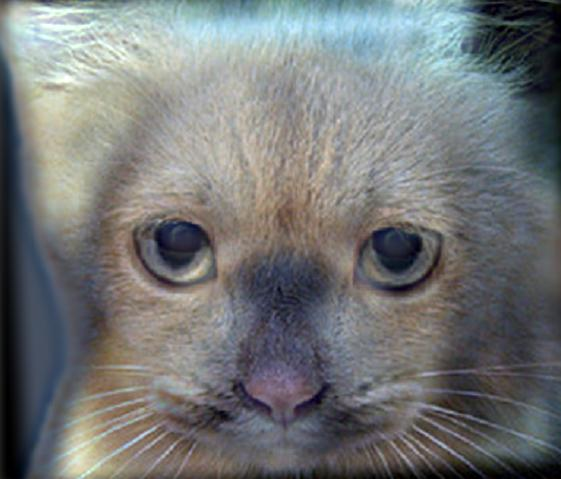

CS 591I Computational Photography
Project 1: Hybrid Image
Designer: Xue Yang
Date: September 8th, 2012
|
The technique of Hybrid Images[1] is allowed producing images with two interpretations that change as a function of viewing distance. The basic idea is that the high frequency components in an image tend to dominate perception when it is available, but, at a distance, only the low frequency part can be seen at a short distance. By blending the high frequency portion of one image with the low-frequency portion of another, we get a hybrid image that leads to different interpretations at different distances.
In this project, the technique of Hybrid Images is employed. In the following sections, several diverse experimental results are discussed and presented.
|
|
Puzzled Facial Expression (using low-pass filter) |
Scared Facial Expression (using high-pass filter) |
- Recognizing in a far viewing distance
- Using a low-pass filter
|
- Recognizing in a near viewing distance
- Using a high-pass filter
|
Figure 1. Original Images of Experiment 1
Mr. Bean is a well-known actor all round world. Audience love his multivariate and exaggerate facial expressions. In the first experiment, I am trying to blend two distinct facial expressions (i.e., scared expression and puzzled expression) from Mr. Bean and generate a hybrid image which can be identified a scared face in a near viewing distance and a puzzled face in a far viewing distance.
Image 1 |
Low-Pass Filtered Image 1 |
Hybrid Image |
|
|
|
Image 2 |
High-Pass Filtered Image 2 |
|
|
Figure 2. Use Gaussian Filter to get the low-pass filtered image1. Use impulse filter minus the Gaussian filter to get the high-pass filtered image2; Blend these two images to produce the target Hybrid Image. Use the slider to figure out the different faces when changing the size of the hybrid image.
Using the alignment function, we can find the best position to overlap the input images. In figure 2, the low-pass filters used for both image1 and image2 (impulse filter minus the gaussian filter to get the high-pass filter) are Gaussian filters implemented in the spatial domain. And compute the convolutions between the filters and the target images to generate the filtered images. In low-pass filtered image, the picture looks blurry compared to its original image because of subtracting the high-frequency components. Similarly, the high-pass filtered image mainly consists of the high-frequency details and eliminates all the elements belonging to the low-frequency.
Since the result of Gaussian Function's Fourier Transform is till a Gaussian Function with a little difference in the expression as well as value of standard division  and
and  , there exists a relationship between these two parameters:
, there exists a relationship between these two parameters:  . And we can get the cut-off frequency of the Gaussian filter through:
. And we can get the cut-off frequency of the Gaussian filter through:  , where c = 2 represents the point with frequency resulting in the 1/2 amplitude gain. From these two formulas we can conclude that there exists a reciprocal relationship between the standard division and the cut-off frequency . Therefore, instead of using cut-off frequency as a parameter in the frequency domain, the standard division ¦Ò can play the same role in spatial domain (reciprocal relationship). Generally speaking the selected standard division as well as the cut-off frequency control the visual distance for the corresponding filtered images. For instance, if we choose a small standard division for the high-pass filter, it will turn out that only the components with quite high-frequency can be preserved in short distance and will be quickly disappear with enlarging the viewing distance. Oppositely we need to employ a large cut-off frequency to get the same phenomenon. In the first experiment, the standard divisions are and .
, where c = 2 represents the point with frequency resulting in the 1/2 amplitude gain. From these two formulas we can conclude that there exists a reciprocal relationship between the standard division and the cut-off frequency . Therefore, instead of using cut-off frequency as a parameter in the frequency domain, the standard division ¦Ò can play the same role in spatial domain (reciprocal relationship). Generally speaking the selected standard division as well as the cut-off frequency control the visual distance for the corresponding filtered images. For instance, if we choose a small standard division for the high-pass filter, it will turn out that only the components with quite high-frequency can be preserved in short distance and will be quickly disappear with enlarging the viewing distance. Oppositely we need to employ a large cut-off frequency to get the same phenomenon. In the first experiment, the standard divisions are and .
In experiment 2, I still used images from our lovely Mr. Bean.
Change of facial expression |
Image 1 |
Image 1 (Low-pass Filtered) |
Hybrid Image |
Image 2 (High-pass filtered) |
Image 2 |
Spatial domain |
|
|
|
 |
|
Frequency domain |
|
|
|
 |
|
Figure 3. The log magnitude of the Fourier Transform of the two input images, the filtered images, and the hybrid image.
To conduct the frequency analysis, the following image Figure 3 shows the log magnitude of the Fourier Transform of these six images in the spatial domain. From the generated images in frequency domain, we can conclude that: 1) comparing Image 1 and (low-pass filtered) Image 1 in the frequency domain, the high-frequency magnitudes are highly suppressed; 2) comparing Image 2 and (high-pass filtered) Image 2 in the frequency domain, the low-frequency magnitudes are compressed.
Through experiments, we realize that color is a significant factor when creating a hybrid image. Since human's optical system is more sensitive to colorful components, we take advantage of this interesting point and utilize color as a grouping cue that can be used to create more compelling.
Image 1 (to use low-pass filter) |
Image 2(to use high pass filter) |
|
|
Figure 4. The original images
In this experiment, I used image1 as the low-pass filtered image and image2 as the high-pass filtered image. According to different color combinations, the program generated four diverse hybrid images in Figure 5. Hybrid Image1(using color images for both the high-pass filter and the low-pass filter) looks quite the same as Hybrid Image2(using color image for low-pass filter and gray image for high-pass filter). And the high-frequency components in Hybrid Image4 looks more obvious than the other three hybrid images. Therefore, we can infer that color used only in the high partial frequencies will enhance the high-frequency elements and reinforce the interpretation of the low-frequency portion as shadows when the hybrid image is viewed up close.
Hybrid Images |
Hybrid Image 1 |
Hybrid Image 2 |
Hybrid Image 3 |
Hybrid Image 4 |
|
|
|
 |
|
Color |
Color |
Gray |
Gray |
|
Color |
Gray |
Gray |
Color |
Figure 4. Using different color scales for both low-pass filtered image and high-pass filtered image to generate four different types of hybrid images.
5. Experiment #4. Gaussian and Laplacian Pyramids
Constructing Gaussian and Laplacian Pyramids can be done according to the following steps:
Repeat i = 1: num_levels {
1). Use the image in level gaussian pyramid  to convolution with the fixed Gaussian Filter and get the temporary level Gaussian Pyramid . to convolution with the fixed Gaussian Filter and get the temporary level Gaussian Pyramid .
2). Subtract the temporary level .from the level Gaussian Pyramid to get the level Laplacian Pyramid .
3). Sub-sample the temporary level image to get the level Gaussian Pyramid.} |
|
Figure 5. The principles of constructing Gaussian and Laplacian Pyramids
|
Level 1 |
Level 2 |
Level 3 |
Level 4 |
Gaussian Pyramid |
 |
Laplacian Pyramid |
 |
Figure 6.The experimental images of Gaussian and Laplacian Pyramids
To implement the Gaussian and Laplacian Pyramids, I use the interesting facial expressions from another famous comedy star Jim Carrey. From the levels in Gaussian Pyramid, we notice that in the hybrid image the high-frequency elements gradually extinct and the low-frequency components show up as the levels increasing. Actually, the eliminated high-frequency components build the corresponding levels in Laplacian Pyramid.
No experiments can be absolutely successful. During the implementation of creating hybrid image, I have failed several times in both choosing the appropriate images and the suitable parameters (e.g., standard division and the size of gaussian filter kernel).
Unsuccessful Hybrid Image |
Image1 (to use low-pass filter) |
Image 2 (to use high-pass filter) |
Hybrid Image |
Analysis of failure |
|
|
|
It is a failed hybrid image. We can still identify the high-frequency components from the small sized hybrid image below. The reasons can be concluded as following:
1. The region of interests in these two images failed to perfectly match each other. It will case some troubles in aligning these two images. Therefore, we should notice that it is a vital factor for creating a successful hybrid image that choosing the almost same sized target objects in image that will become the overlapping portion of hybrid images.
2. The cut-off frequency for the high-pass filter is a little small which will increase the visual distance for high-frequency components in the hybrid image.
|
Successful Hybrid Image |
Image1 (to use low-pass filter) |
Image 2 (to use high-pass filter) |
Hybrid Image |
Analysis of success |
|
|
 |
It is a successful hybrid image. We can identify the low-frequency components from the small sized hybrid image below without the disturbance of the high-frequency portion. The reasons can be concluded as following:
1. The region of interests in these two images can perfectly match each other.
2. The cut-off frequencies for both the high-pass filter and the low-pass filter are appropriate to create a goo hybrid image.
3. The alignment for both images are suitable.
|
Figure 6. An example of failed hybrid image and an example of successful hybrid image